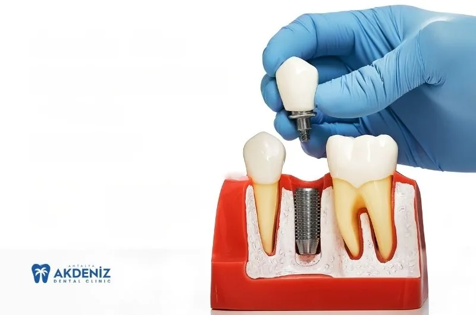

Zahnimplantate trotz Parodontitis – geht das?Ja, auch bei Parodontitis sind Zahnimplantate möglich – die Zahnfleischerkrankung muss jedoch vorher richtig behandelt werden.Können Menschen mit Zahnfleischerkrankungen eine Implantatbehandlung erhalten?
Zahnverlust kann für viele von uns ein Albtraum sein. Doch genetische Faktoren, Lebensgewohnheiten und zunehmendes Alter können zu Zahnverlust führen. Glücklicherweise helfen heutige zahnärztliche Behandlungen, moderne Techniken und Technologien, diese Angst zu mildern, indem sie nahezu perfekte Lösungen für das Problem bieten.
Nach einem Zahnverlust ist es wichtig, sich behandeln zu lassen, um Knochenabbau und das Wandern der Zähne zu verhindern. Für die meisten von uns sind Zahnimplantate die erfolgreichste Option. Der Zahnersatz ist festsitzend, und nach der Heilung fühlt sich das Implantat für den Patienten wie ein eigener Zahn an – deshalb ist es so erfolgreich.
Damit diese Behandlung infrage kommt, müssen Patienten jedoch bestimmte gesundheitliche Voraussetzungen erfüllen. Eine davon ist, dass Knochendichte und Knochenvolumen ein bestimmtes Niveau erreichen. Eine weitere ist, dass das Zahnfleisch des Patienten gesund ist. Zahnfleischerkrankungen können viele zahnärztliche Lösungen und Behandlungen verhindern. Daher müssen vor fast allen zahnärztlichen Behandlungen und Eingriffen Vorbehandlungen zur Beseitigung von Zahnfleischerkrankungen erfolgen.
Sind Zahnimplantate also bei einer Zahnfleischerkrankung möglich? Ja, Menschen mit Zahnfleischerkrankungen können eine Implantatbehandlung erhalten, doch die Zahnfleischerkrankung muss vorher fachgerecht behandelt werden.
Was ist ein Zahnimplantat?
Ein Zahnimplantat ist eine künstliche Zahnwurzel mit hoher Biokompatibilität. Es wird nach einem Zahnverlust meist in den Kieferknochen und manchmal in das Jochbein eingesetzt. Diese Wurzel verhindert, dass Ihre gesunden Zähne wandern und sich verschieben. Außerdem verhindert sie den Abbau des Knochens, in dem Ihr verlorener Zahn verankert war.
Die Implantatbehandlung ist ein chirurgischer Eingriff. Dank der zuvor verabreichten örtlichen Betäubung spüren Sie jedoch während des Eingriffs weder Schmerzen noch Empfindlichkeit. Sobald das Implantat über einen kleinen Schnitt eingesetzt wurde, ist die erste Behandlungsphase abgeschlossen. Danach folgt eine Wartezeit von etwa drei Monaten für die Heilung. In dieser Zeit kann das Implantat mit dem Knochen und dem umliegenden Gewebe verwachsen. Während dieser Zeit erhalten Sie in der Regel einen provisorischen festsitzenden Zahnersatz, der leicht, aber nicht sehr belastbar ist. So verbringen Sie die Wartezeit sowohl ästhetisch als auch funktionell angenehmer. Sobald das Implantat fest im Knochen verankert ist und das umliegende Gewebe es umschließt, ist die Behandlung weitgehend erfolgreich. Anschließend wird Ihr endgültiger festsitzender Zahnersatz auf dieser künstlichen Zahnwurzel befestigt. Schon bald können Sie mit Ihrem neuen Zahn selbstbewusst leben – er fühlt sich wie Ihr eigener an und sieht so natürlich wie möglich aus.
Was ist das Zahnfleisch? Welche Funktion hat es?
Das Zahnfleisch ist das rosafarbene, lebende Gewebe, das die Zahnwurzel und den Kieferknochen umgibt. Es bedeckt außerdem den wurzelnahen Teil des Zahns. Das Zahnfleisch hilft den Zähnen, im Kieferknochen zu haften und versorgt zu werden, und schützt zugleich die Zähne. Es schützt Zahnwurzeln und Kieferknochen vor Speiseresten, Stößen und Bakterien und verringert so das Infektionsrisiko. Gleichzeitig sorgt es dafür, dass die Zahnwurzeln fest im Kieferknochen verankert sind. Gesundes Zahnfleisch ist rosa gefärbt. Wird es rot oder violett, ist das ein Zeichen dafür, dass es nicht mehr gesund ist.
Neben seinem funktionellen Nutzen ist das Zahnfleisch auch ästhetisch wichtig. Es scheint gesunde Zähne lediglich zu ergänzen, spielt in Wirklichkeit aber eine zentrale Rolle für die Zahngesundheit.
Was ist eine Zahnfleischerkrankung?
Eine andere Bezeichnung für Zahnfleischerkrankungen ist Parodontalerkrankung. Eine Zahnfleischerkrankung ist eine Infektion des lebenden Gewebes, das die Zähne umgibt und schützt. Auch wenn eine Zahnfleischerkrankung harmlos erscheinen mag, kann sie unbehandelt zu einem ernsten Zustand fortschreiten, der zu Knochen- und Zahnverlust führen kann. Wenn Sie Symptome bemerken, sollten Sie daher unbedingt einen Fachzahnarzt für eine frühzeitige Behandlung aufsuchen. Um dieser durch Bakterien und Plaque verursachten Erkrankung vorzubeugen, ist eine sorgfältige und regelmäßige Mundhygiene wichtig.
Die Gingivitis ist das erste Stadium einer Zahnfleischerkrankung. In diesem Stadium sind Behandlung und Heilung viel einfacher. Zu den Symptomen gehören rotes, geschwollenes Zahnfleisch und Zahnfleischbluten beim Zähneputzen. Eine gründliche Mundhygiene, bei der Plaque und Bakterien von Zähnen und Zahnfleisch entfernt werden, reicht aus, um die Mundflora ins Gleichgewicht zu bringen. In diesem Stadium kommt es nicht zu Knochen- oder Zahnverlust. Werden die nötigen Maßnahmen jedoch nicht ergriffen, schreitet die Erkrankung zur Parodontitis fort.
Die Parodontitis ist das nächste Stadium nach der Gingivitis. In diesem Stadium zieht sich das Zahnfleisch zurück, und es bilden sich Taschen zwischen Zähnen und Zahnfleisch. Dadurch sind Kieferknochen und Zahnwurzeln der äußeren Umgebung ausgesetzt, und Bakterien können sich in diese Bereiche ausbreiten. Unbehandelt kann dies zu Zahn- und Knochenverlust führen. Symptome, die darauf hinweisen, dass Ihre Zahnfleischerkrankung dieses Stadium erreicht hat, sind starkes Zahnfleischbluten, gerötetes Zahnfleisch, Zahnfleischrückgang, Lücken zwischen den Zähnen und gelockerte Zähne. Die Hauptursachen sind vermehrte Plaque, Zahnstein und Bakterienansammlungen infolge mangelnder Mundhygiene. Weitere Faktoren, die diese Erkrankung begünstigen, sind chronische Krankheiten wie Diabetes, Rauchen und genetische Veranlagung.
Wie wirken sich Zahnfleischerkrankungen auf die Mundgesundheit aus?
Zahnfleischerkrankungen beeinträchtigen die Mundgesundheit und können im fortgeschrittenen Stadium den ganzen Körper betreffen. Deshalb sind eine frühzeitige Diagnose und Behandlung wichtig. Andernfalls wird die Behandlung immer schwieriger und kann einen interdisziplinären Ansatz erfordern.
Zahnbelag und Zahnstein weisen auf zunehmende Bakterienansammlungen hin. Sie verursachen Infektionen.
Das Zahnfleischbluten nimmt zu und tritt häufiger auf.
Es kann zu Zahnfleischrückgang kommen. Dadurch werden die Zähne anfälliger, da sich das Zahnfleisch mit der Zeit bis zu den Zahnwurzeln zurückziehen kann.
Wenn sich das Zahnfleisch zurückzieht, ist der Kieferknochen äußeren Einflüssen ausgesetzt und wird abgebaut (Resorption).
Die Zahnwurzeln verlieren mit dem Rückgang des Zahnfleisches an Halt, sodass sich die Zähne lockern. Das beeinträchtigt auch die Kaufunktion.
Es entsteht starker Mundgeruch. Er ist eine Folge der wachsenden Bakterienzahl.
Auch Zahnverlust kann die Folge sein.
Darüber hinaus können Zahnfleischerkrankungen durch die vermehrten Bakterien und die Infektion auch zu Herz-Kreislauf-Erkrankungen, Diabetes und Frühgeburten beitragen.
Warum ist gesundes Zahnfleisch für eine Implantatbehandlung wichtig?
Vor dem Hintergrund all dieser Informationen wird deutlich, wie wichtig gesundes Zahnfleisch für die Implantatbehandlung ist.
Bei diesem Eingriff wird die künstliche Wurzel von gesundem Gewebe umgeben und verwächst fest mit dem Kieferknochen. Mit anderen Worten: Gesundes Zahnfleisch ermöglicht es dem Implantat, sich in Ihr natürliches Gewebe einzufügen und mit dem Knochen zu verbinden.
Gesundes Zahnfleisch verringert das Infektionsrisiko bei diesem chirurgischen Eingriff erheblich.
Außerdem sorgt es dafür, dass die Heilung nach dem Eingriff wie erwartet schnell verläuft.
Krankes Zahnfleisch kann dagegen verhindern, dass die künstliche Wurzel sicher einheilt, selbst wenn das Implantat korrekt gesetzt wurde. Ein dauerhaftes Ergebnis lässt sich so nicht erzielen.
Eine Zahnfleischerkrankung bedeutet entzündetes Zahnfleisch. Die Implantatbehandlung ist ein chirurgischer Eingriff. Besteht zu Beginn eine Infektion, bietet das geöffnete Zahnfleisch der Infektion die Möglichkeit, sich auszubreiten. Opportunistische Bakterien lassen die Erkrankung fortschreiten.
Aus diesen Gründen muss eine Zahnfleischerkrankung behandelt werden, bevor die Implantatbehandlung beginnen kann.
Zahnimplantate und Zahnfleischerkrankungen: häufige Fragen
Was ist, wenn der Zahnverlust durch eine Parodontitis entstanden ist – können trotzdem Implantate gesetzt werden?
Auch wenn Sie einen Zahn durch eine Zahnfleischerkrankung verloren haben, können Sie ein Zahnimplantat erhalten. Zunächst muss jedoch Ihre Zahnfleischerkrankung behandelt werden. Die Implantatbehandlung kann erst erfolgen, wenn der Bereich verheilt ist. Haben Dichte und Volumen Ihres Kieferknochens durch die Zahnfleischerkrankung abgenommen, kann als Vorbehandlung ein Knochenaufbau nötig sein.
Wie hoch sind die Erfolgsraten von Zahnimplantaten, und welche Faktoren beeinflussen sie?
Zahnimplantate sollten nur von Fachzahnärzten in geeigneten klinischen Umgebungen bei Patienten durchgeführt werden, deren Gesundheits- und Lebensumstände dafür geeignet sind. Unter diesen Bedingungen liegt die Erfolgsrate zwischen 90 % und 98 %. Der Behandlungserfolg hängt von mehreren Faktoren ab, darunter die Mund- und Zahnhygiene des Patienten, Knochendichte und Knochenvolumen, Fachwissen und Kompetenz des Oralchirurgen, die angewandte Technik, die Wahrnehmung der vorgesehenen Nachkontrollen nach der Behandlung und die Eignung der klinischen Bedingungen.
Welche Vorbehandlungen können nötig sein, wenn eine Zahnfleischerkrankung den Kieferknochen geschädigt hat?
In diesem Fall sollte zuerst Ihr Zahnfleisch behandelt werden. Anschließend sollte mit einem Knochenaufbau das Volumen und die Dichte Ihres Kieferknochens erhöht werden. Ihr Zahnfleisch sollte zudem mit einem Weichgewebetransplantat gestärkt werden. Sobald der gewünschte stabile Knochen und das Weichgewebe erreicht sind, kann die Implantatbehandlung erfolgen.